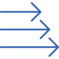

Penetration Testing
The attack surface of your company is more exposed than you might think. You have external facing applications that has a mutual trust relation with applications inside your organisation. Vulnerabilities may exist in these areas, on both application but also at infrastructural level. How do you know your network and applications are resilient against modern attacks? With our penetration testing service, we can identify vulnerabilities that could impact your services or your business. Contrahack has created a unique methodology for the application and infrastructural areas to make sure all the vulnerabilities are discovered so you have one less thing to worry about.